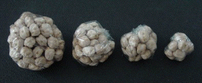

|  |
| Weigh out different amounts of dried peas. |
| Wrap each
amount in plastic wrap, in an approximately spherical shape and measure the
diameters of the clusters. |
| One experiment gave the results on the left. |
| Plotting
Log(mass) vs Log(diam), we see the points fall almost along a straight line of
slope 3.0. |
|
| This data supports a power law relation of the form |
| mass = k⋅diam3 |
| On the other hand, the peas pack tightly.
Although there are spaces between
the peas, the spaces are all about the same size. |
| There is no hierarchy of structures
that characterize fractals. |
| Unlike crumpled paper, clusters of peas are not fractal. |
Return to